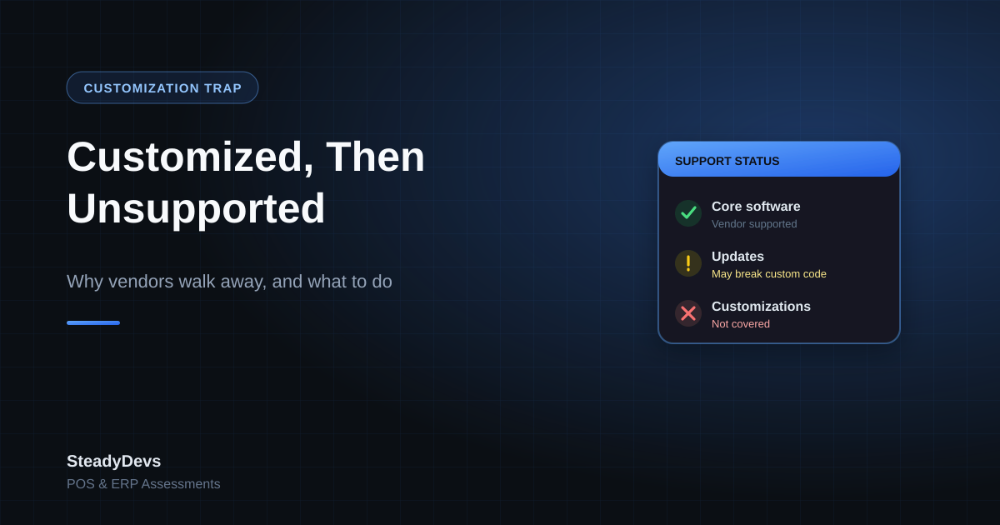

"We customized our POS system to match our business process. Now when we call for support, the vendor says our customizations void the warranty and they can't help. We're stuck."
This scenario plays out regularly across Malaysian SMEs. A business buys commercial POS or ERP software, discovers it doesn't quite fit their specific needs, pays for customizations, and then finds themselves trapped: the vendor won't support the customized system, but the business can't operate without the customizations.
Here's why this happens, how to avoid the trap, and what your options are if you're already in it.
Why Vendors Refuse to Support Customized Systems
This isn't vendors being difficult—it's a legitimate technical and business problem:
1. Customizations Break Standard Troubleshooting
When you report a bug to a vendor, their support process assumes standard software. They've documented behavior, test cases, and known issues for the out-of-box product. Customizations invalidate all of that.
Is the bug in the vendor's core code or in your custom modifications? Support can't tell without understanding your customizations—which requires time and expertise they don't have budget for.
2. Updates Become Unsupported
Software vendors release updates for bug fixes, security patches, and new features. These updates assume standard software. When customizations exist, updates can break custom code unpredictably.
Vendors can't test updates against every possible customization. So they declare: "If you customize, updates are your responsibility." This means you either skip updates (security risk) or pay someone to retrofit customizations after each update (expensive).
3. Support Costs Explode
Supporting customized systems requires understanding custom code, which is different for every customer. Support time per ticket increases 3-10x. Vendors can't provide this level of support at standard pricing.
So they exclude customized systems from standard support contracts to avoid unpredictable support costs.
4. Liability Concerns
If a vendor provides support guidance on a customized system and something breaks, who's responsible? The uncertainty creates legal and warranty complications vendors prefer to avoid.
Easiest solution from vendor perspective: "We don't support customized systems."
How Businesses Fall Into This Trap
The customization trap develops through a predictable sequence:
Stage 1: Software Purchase
Business evaluates POS/ERP systems, chooses one that's "80% fit," and assumes the 20% gap can be customized. Vendor says "yes, we can customize" without clearly explaining support implications.
Stage 2: Customization Implementation
Business pays RM 15,000-40,000 for customizations. System now works perfectly for their specific needs. Everything seems great.
Stage 3: First Support Issue
Six months later, something breaks. Business calls vendor support. Vendor asks: "Is this a customized system?" When business says yes, vendor responds: "We can't support customized systems. Contact whoever did your customizations."
Stage 4: Realization of Lock-In
Business realizes they're dependent on the customization developer. If that developer is unavailable, unresponsive, or expensive, business is stuck. They can't get vendor support, and they can't maintain customizations themselves.
Meanwhile, business operations depend on those customizations—reverting to standard software means losing critical functionality.
Common Customization Scenarios That Cause Problems
1. Custom Reporting
Why businesses need it: Standard reports don't match how they need to analyze data. Custom reports for specific business metrics, compliance formats, or management dashboards.
Why it causes problems: Custom reports query the database directly. When vendor updates database schema, custom reports break. Vendor won't fix them because they're custom code.
2. Workflow Modifications
Why businesses need it: Standard software has generic workflows. Businesses customize to match their specific operational process—approval chains, notification triggers, status workflows.
Why it causes problems: Workflow changes modify core application logic. When vendor releases updates, conflicts emerge. Determining whether issues come from core code or custom workflow requires deep analysis.
3. Third-Party Integration
Why businesses need it: Need to connect POS/ERP to accounting software, e-commerce platforms, payment gateways, loyalty systems that aren't natively supported.
Why it causes problems: Integrations depend on specific software versions and data formats. Vendor updates can break integration connectors. Vendor can't support the integration because they don't control the third-party system.
4. User Interface Changes
Why businesses need it: Staff find standard UI confusing or inefficient. Customize to simplify workflows, hide unused features, add shortcuts.
Why it causes problems: UI customizations modify application code directly. Vendor updates overwrite UI changes, requiring reapplication after every update.
5. Pricing or Calculation Logic
Why businesses need it: Complex pricing rules, tier-based discounts, loyalty point calculations, commission structures not supported by standard software.
Why it causes problems: This is core business logic modification. When bugs occur, impossible to determine if they're in vendor code or custom calculation logic. Vendor refuses to touch it.
How to Avoid the Customization Trap
If you're evaluating POS/ERP systems now, here's how to avoid this trap:
Strategy 1: Choose Software That Fits (Not Customize What Doesn't)
If software needs heavy customization to work for your business, it's the wrong software. Better to find software that matches your needs 95%+ out-of-box, even if it costs more upfront.
Customization should be for edge cases, not core functionality.
Strategy 2: Adapt Process to Software (When Reasonable)
Sometimes your business process should change to match industry standard software, rather than customizing software to match your process.
If your process is truly unique and provides competitive advantage, customization makes sense. If it's just "how we've always done it," adapting to software's standard workflow is often cheaper and more maintainable.
Strategy 3: Use Configuration, Not Customization
Good commercial software offers configuration options—settings, toggles, parameters—without code modification. Configured systems remain supportable because no code changed.
Prioritize configurable solutions over ones requiring code customization.
Strategy 4: Build Custom Separately, Integrate via API
Instead of customizing vendor software, build separate custom components that integrate via API. For example: use standard POS for core operations, build separate custom reporting system that pulls data via API.
This keeps vendor software standard (and supportable) while giving you custom functionality independently maintained.
Strategy 5: Get Support Terms in Writing Before Customizing
Before paying for customizations, get clear written answers:
- Will vendor support remain valid after customization?
- Who supports custom code vs. core software?
- How do updates work with customizations?
- Who's responsible for fixing conflicts between updates and customizations?
- What happens if customization developer becomes unavailable?
If vendor says "we don't support customized systems," know that upfront before committing.
What to Do If You're Already Stuck
If you already have customized system without vendor support:
Option 1: Maintain Relationship with Customization Developer
Whoever did your customizations understands the custom code. Maintain ongoing relationship for support and updates. Budget RM 2,000-5,000/month retainer for maintenance.
This only works if developer is reliable and responsive. If they disappear, you're back in crisis.
Option 2: Document Customizations Thoroughly
Get comprehensive documentation of what was customized, how it works, and how to maintain it. This allows transitioning to different developer if original becomes unavailable.
Also get source code for all customizations stored independently (not just on developer's machine).
Option 3: Freeze Version (Skip Updates)
Stay on current software version indefinitely to avoid update conflicts. This works short-term but creates security and compatibility risks long-term.
Acceptable for 2-3 years, not sustainable longer than that.
Option 4: Reverse Customizations
Remove customizations and return to standard software. Only viable if you can operate without custom functionality (adapt processes, use workarounds, build separate tools).
Painful transition but regains vendor support.
Option 5: Migrate to Different Software
If current customized system is unmaintainable and vendor won't support it, migration might be necessary. Look for software that natively supports what you currently achieve through customization.
Expensive (RM 40,000-100,000+ typically) but breaks vendor lock-in.
Option 6: Custom-Built Replacement
If your needs are truly unique and no commercial software fits, commission custom-built system. At least you control it entirely.
Most expensive option (RM 80,000-200,000+) but eliminates vendor dependency. Only makes sense if customization needs are extensive and no commercial alternative exists.
Red Flags During Software Evaluation
Warning signs that customization trap is likely:
- Vendor says "yes we can customize that" without discussing support implications
- Vendor's standard software matches only 60-70% of your needs
- Vendor doesn't clearly distinguish configuration vs. customization
- No written policy on customization support
- Vendor recommends extensive customization during sales process
- Update process isn't clearly explained
- Other customers report support difficulties after customizing
- Vendor doesn't offer API or integration capabilities (forcing direct code modification)
Questions to Ask Before Customizing
- Can this be achieved through configuration instead of customization?
- Can we adapt our process instead of customizing the software?
- Can this be built separately and integrated via API?
- What happens to vendor support after customization?
- How do updates work with customizations?
- Who owns the custom code?
- What's the long-term maintenance cost?
- What's our exit strategy if customization becomes unmaintainable?
- Have other customers with similar customizations had support problems?
- Can we get source code for customizations?
If you can't get satisfactory answers, customizing is risky.
The Bottom Line
Commercial software customization creates a lock-in trap: you become dependent on the customization developer while losing vendor support. You're stuck between a vendor who won't help and a developer who might not always be available.
Before customizing:
- Exhaust configuration options
- Consider adapting process to software
- Look for better-fitting alternatives
- Build custom components separately via API integration
- Understand exactly what you're giving up (vendor support, easy updates)
If you customize anyway, protect yourself:
- Get everything in writing
- Own the source code
- Document thoroughly
- Maintain developer relationship long-term
- Budget for ongoing custom code maintenance
The customizations that feel essential today often become the technical debt that limits your business tomorrow. Choose carefully.
Stuck With Unsupported Customizations?
SteadyDevs can assess your customized POS/ERP situation, document existing customizations, and help you create a sustainable maintenance plan or migration strategy.
Get AssessmentFrequently Asked Questions
Depends on what your contract says. If contract explicitly excludes customized systems from support (most do), you don't have legal grounds. Before customizing, review support contract carefully. If customization support isn't guaranteed in writing, assume it won't be available.
Better situation than third-party customization—vendor understands their own custom work. However, vendor still faces update conflicts and support complexity. Ask whether custom work will be maintained through updates and if it's covered by standard support or requires separate maintenance contract.
AI can help understand custom code faster than traditional reverse-engineering, but it's not a complete substitute for human expertise. AI is a productivity tool for capable developers, not a replacement for development skill. You'll still need developer support, just potentially less of it.
Rule of thumb: 20-30% of original customization cost annually. If customizations cost RM 30,000, budget RM 6,000-9,000/year for maintenance (fixing bugs, updating after vendor upgrades, adjusting for changing business needs). More complex customizations require higher percentage.
Yes: API-based integration. Build custom features as separate applications that connect to vendor software via API rather than modifying vendor code. Vendor software stays standard (and supportable), while you get custom functionality independently. Costs more upfront but avoids support trap.